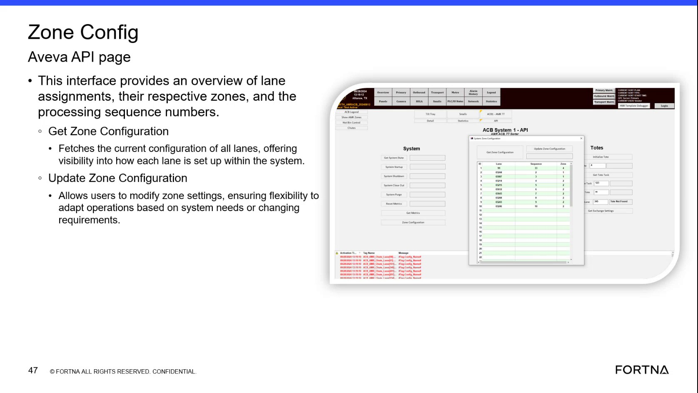
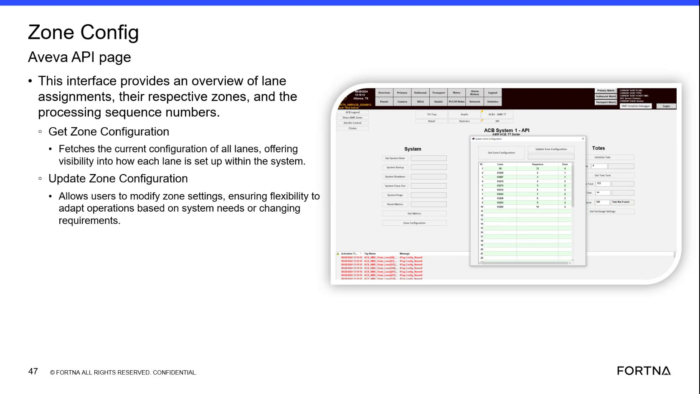

| Procedure ID | proc_check_current_zone_configuration_get_zone_configuration_v1 |
|---|---|
| Title | Check Current Zone Configuration Using “Get Zone Configuration” (Zone Config Aveva API page) |
| Procedure Type | diagnostic |
| Primary Role | L2_support |
| Support Safe | Yes |
| Capability Tags | zone_config_state |
| Access Surface | aveva_hmi, wcs_api |
| Audience Roles | L2_support |
| Failure Pattern Tags | api_unresponsive, mapping_abnormal |
| Validation Status | needs_sme_review |
| Merge Status | source_finalized |
Use the Zone Config Aveva API page’s “Get Zone Configuration” function to retrieve the current lane-to-zone configuration and confirm that lane assignments, zones, and processing sequence numbers are present and populated.
When you need to verify the current zone configuration returned by the Zone Config interface—specifically that all lanes have assigned zones and processing sequence numbers populated.


Responsible role: L2_support
Instruction:
Open the “Zone Config Aveva API page” interface.
Expected result:
The Zone Config Aveva API page is displayed with the “Get Zone Configuration” function available and an area that presents lane assignments, zones, and processing sequence numbers.
Responsible role: L2_support
Instruction:
Click/select “Get Zone Configuration” to fetch the current configuration of all lanes.
Expected result:
A fetch is performed and results are returned for the lane configuration (lane assignments with their respective zones and processing sequence numbers).
Stop or Escalate If:
Responsible role: L2_support
Instruction:
Observe the returned results and confirm that each lane has a zone and a processing sequence number populated.
Expected result:
The “Get Zone Configuration” fetch returns a non-empty configuration for all lanes, with each lane showing its respective zone and processing sequence number.
Stop or Escalate If: